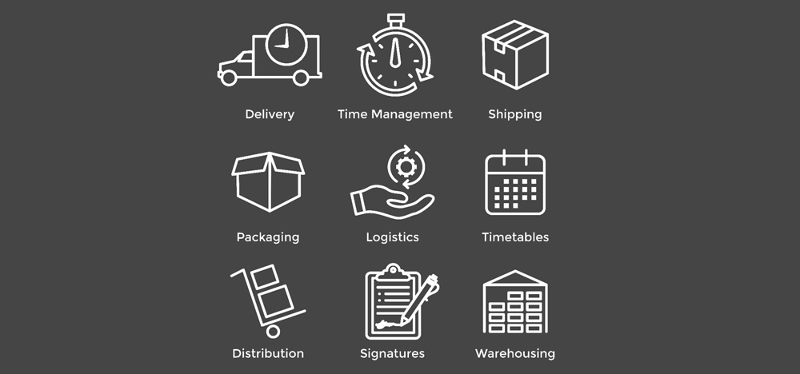

Dec 18, 2018

THIRD PARTY LOGISTICS (3PL) is an efficient way to transport your company’s raw material or product from point A to point B. Third-party logistics providers typically specialize in integrated operations of warehousing and transportation services that can be scaled and customized to customers' needs, based on market conditions, to meet the demands and delivery service requirements for their products. Services often extend beyond logistics to include value-added services related to the production or procurement of goods, such as services that integrate parts of the supply chain.
Before completely understanding 3PL, lets first understand 1PL and 2PL. let’s say that you have a business and you are developing a product for your customers. Now, if you use your own work force to ship that product from your factory to your customers that would be considered as 1PL. This is totally inefficient taking your lot of time and lot of money from your own pocket. If you hire a logistics company like Aramax, AMT, FedEx to ship your product from your company to your desired location that would be considered a 2PL, as you are including a second party in between for the packaging and shipment of your product. This method is better than 1PL as, it will not demand any work force by your side and you will be easily able to provide shipments but it would not be that effective for longer distances to cover. For that, you would need 3PL, here, you introduce a third party into the game. You would need a warehouse in-between your company and your desired location. Now, what will happen is that your company will manufacture that product, a logistics provider will ship that product from your company to that warehouse. Then, you would be easily able to ship that product from your warehouse to your consumers. That warehouse will act as another branch of your company and logistics provider would ensure your shipment to be quick and secure. With, 3PL you would be easily able to manufacture and ship quality products that to well in time, without any work force of your own.
written by :